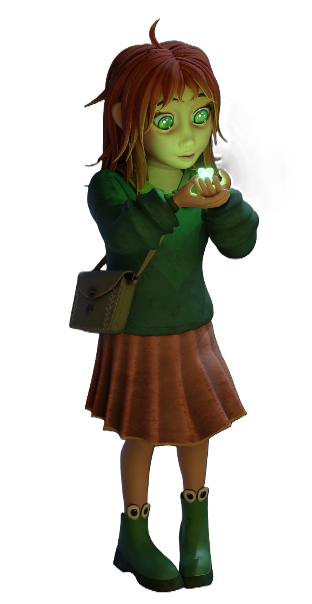
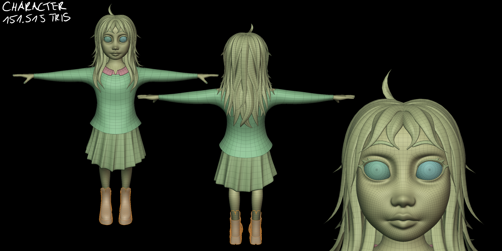
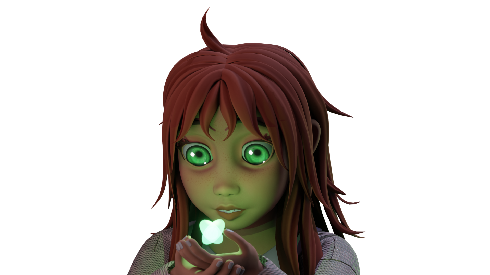
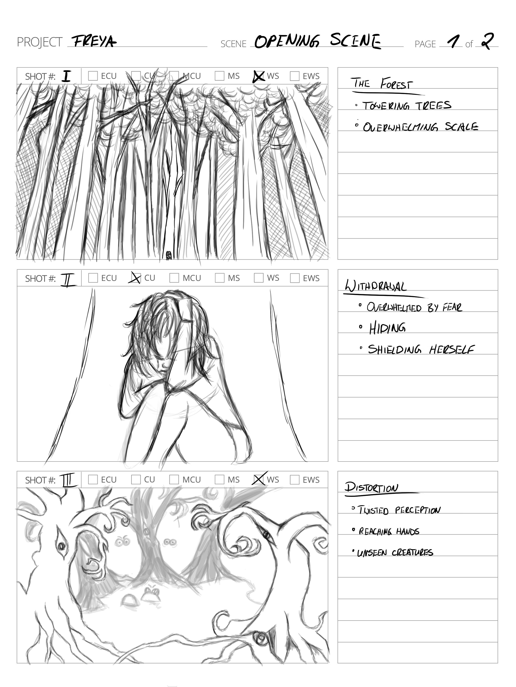
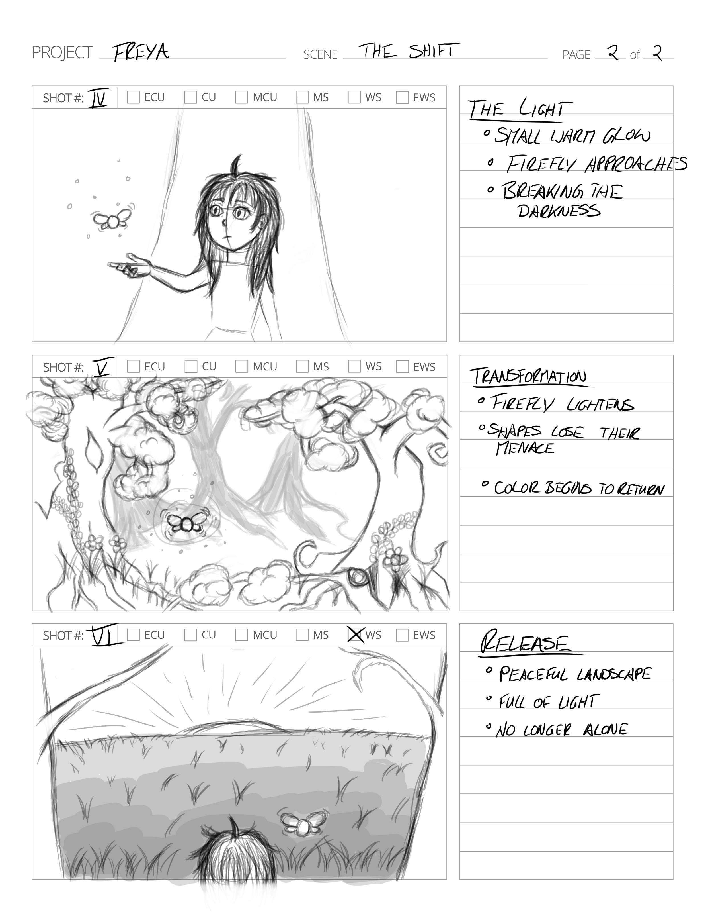

Character Design · 3D
Freya
Freya began with a story rather than a model. Through storyboarding, visual development and character exploration, I shaped her role, personality and appearance before bringing her into 3D through modeling, texturing and look development.

From reference
to form
Freya was created as the main character of The Magic Forest, a personal story project exploring themes of loss, hope and wonder. The project combined character development, storyboarding and 3D production, allowing me to shape both the visual identity of the character and her role within the narrative.
Starting from visual references and early sketches, I explored different directions before translating the character into 3D. The goal was not only to create a stylized model, but to develop a character that felt believable withinthe world and story surrounding her.
- Character Development & Visual Exploration
- Storyboarding & Narrative Integration
- 3D Modeling & Texturing
- Preparation for Animation and Filmdevelopment






